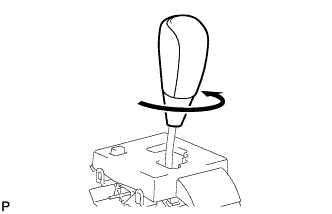
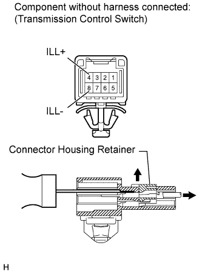
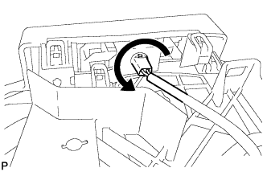
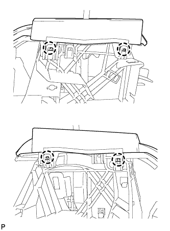
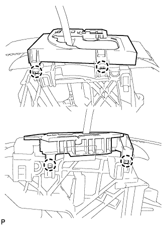
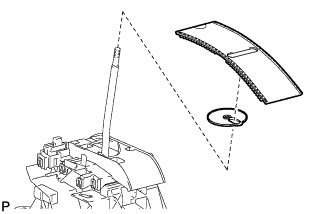
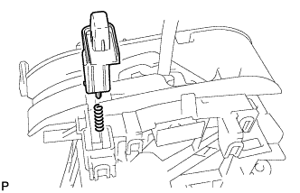
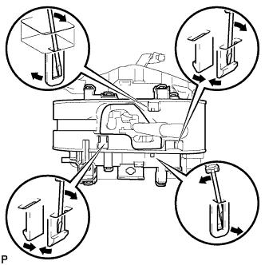
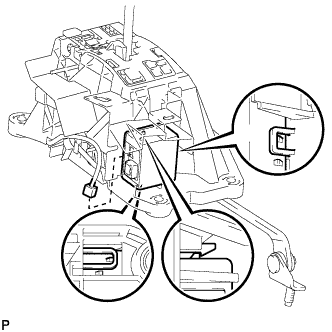

SHIFT LEVER > DISASSEMBLY |
| 1. REMOVE SHIFT LEVER KNOB SUB-ASSEMBLY |
 |
| 2. REMOVE INDICATOR LIGHT WIRE SUB-ASSEMBLY |
 |
Using a thin-bladed screwdriver, release the connector housing retainer.
Using a thin-bladed screwdriver, pull out the 4 (ILL+) and 8 (ILL-) terminals from the rear as shown in the illustration.
 |
Rotate the indicator light wire counterclockwise to align the key part and remove the wire.
| 3. REMOVE POSITION INDICATOR HOUSING ASSEMBLY |
 |
Detach the 4 claws and remove the position indicator housing from the floor shift.
| 4. REMOVE POSITION INDICATOR LENS |
 |
Detach the 4 claws and remove the position indicator lens from the floor shift.
| 5. REMOVE POSITION INDICATOR SLIDE COVER AND NO. 2 POSITION INDICATOR SLIDE COVER |
 |
Remove the position indicator slide cover with No. 2 position indicator slide cover.
Remove the No. 2 position indicator slide cover from the position indicator slide cover.
| 6. REMOVE SHIFT LOCK RELEASE BUTTON |
 |
Detach the 2 claws and remove the button and spring.
| 7. REMOVE LOWER POSITION INDICATOR HOUSING |
 |
Using a small screwdriver, detach the 6 claws and remove the housing.
| 8. REMOVE SHIFT LOCK CONTROL ECU |
 |
Disconnect the shift lock solenoid connector.
Detach the 3 claws and remove the ECU.